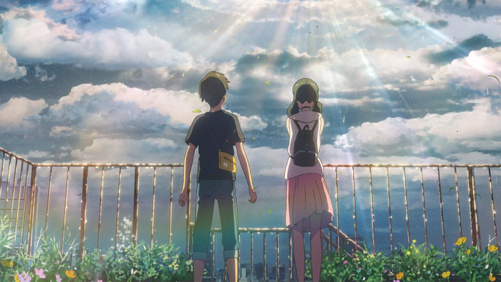
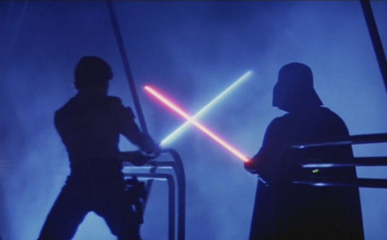
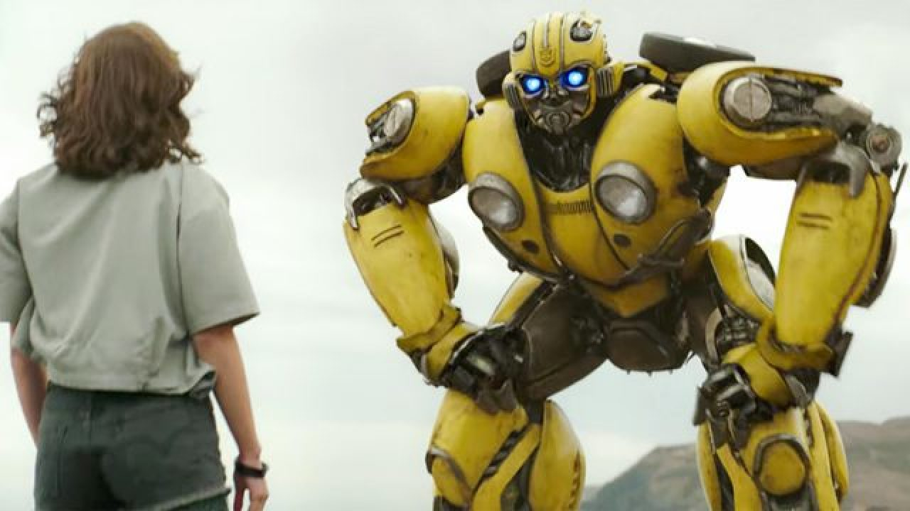

Tokyo is currently experiencing rain showers that seem to disrupt the usual pace of everyone living there to no end.
Amidst this seemingly eternal downpour arrives the runaway high school student Hodaka Morishima, who struggles to financially support himself—ending up with a job at a small-time publisher. At the same time, the orphaned Hina Amano also strives to find work to sustain herself and her younger brother.
Both fates intertwine when Hodaka attempts to rescue Hina from shady men, deciding to run away together. Subsequently, Hodaka discovers that Hina has a strange yet astounding power: the ability to call out the sun whenever she prays for it. With Tokyo's unusual weather in mind, Hodaka sees the potential of this ability. He suggests that Hina should become a "sunshine girl"—someone who will clear the sky for people when they need it the most.

The adventure continues in this "Star Wars" sequel.
Luke Skywalker, Han Solo, Princess Leia and Chewbacca face attack by the Imperial forces and its AT-AT walkers on the ice planet Hoth.
While Han and Leia escape in the Millennium Falcon, Luke travels to Dagobah in search of Yoda. Only with the Jedi master's help will Luke survive when the dark side of the Force beckons him into the ultimate duel with Darth Vader.
After discovering a small, blue, fast hedgehog, a small-town police officer must help him defeat an evil genius who wants to do experiments on him.
Based on the global blockbuster videogame franchise from Sega, SONIC THE HEDGEHOG tells the story of the world's speediest hedgehog as he embraces his new home on Earth.
In this live-action adventure comedy, Sonic and his new best friend Tom (James Marsden) team up to defend the planet from the evil genius Dr. Robotnik (Jim Carrey) and his plans for world domination.
The family-friendly film also stars Tika Sumpter and Ben Schwartz as the voice of Sonic.

After being defeated by the Decepticons in the war on Cybertron, the Autobot leader Optimus Prime sends B-127 to Earth to establish an outpost and protect Earth.
B-127 surprises the training of a group of soldiers under the command of Colonel Jack Burns and escapes. However, he is ambushed by a Deception that damages his memory core and voice-box.
But B-127 defeats the enemy and transforms into a yellow 1967 Volkswagen Beetle. In 1987, the eighteen-year-old Charlie Watson finds the Beetle in a junkyard and the owner Hank gives the car to her.
The teenager is a great mechanic that misses her father and lives with her young brother and her estranged mother and her boyfriend. Charlie accidentally activates a signal and the Decepticons track down B-127 on Earth.
Two Decepticons head for Earth to capture and destroy the Autobot convincing Dr. Powell and the army that they are peaceful and the enemy is a dangerous robot. Meanwhile, Charlie befriends B-127 and calls him Bumblebee.
Divided in two acts, the musical depicts the life and career of Alexander Hamilton, an orphaned immigrant from the Caribbean island of Nevis. The first act covers Hamilton's arrival in New York City in 1776, his work in the Continental Army as an aide-de-camp to General George Washington during the American Revolution, and his courtship and marriage to Eliza Schuyler.
The second act covers Hamilton's postwar work as the first Secretary of the Treasury of the United States, his affair with Maria Reynolds, the death of his son Philip and finally his own death in a duel with Aaron Burr.